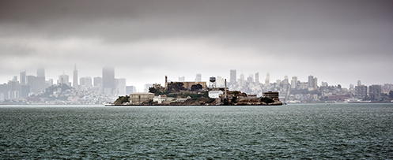
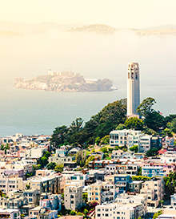

L'île d'Alcatarz
L'île d'Alcatraz, en anglais Alcatraz Island, est une île située dans la baie de San Francisco à 1,92 km (1,19 mile) du port de San Francisco en Californie, dans l'Ouest des États-Unis.
Elle fut nommée ainsi par les Espagnols car elle servait de refuge à de nombreux pélicans (alcatraz est le nom espagnol actuel du fou de Bassan). Cette île hébergea une forteresse militaire pendant plusieurs décennies (1850-1909), puis une prison militaire (1909-1933) et une prison fédérale de haute sécurité (1934-1963). Occupé par les Amérindiens de 1969 à 1971, le complexe d'Alcatraz est aujourd'hui reconverti en un site historique géré par le service des parcs nationaux des États-Unis. Il est visité chaque année par plus d'un million de touristes et demeure un lieu d'observation des oiseaux de la baie.
Faune et flore
Alcatraz abrite d'importantes colonies d'oiseaux. Le site d'Alcatraz est un sanctuaire pour les oiseaux sauvages : on peut y observer le pélican brun, le guillemot colombin, l'huîtrier de Bachman, l'aigrette neigeuse, le bihoreau gris, le bruant à couronne blanche, le bruant chanteur, le colibri d'Anna ou le moucherolle noir. Le goéland d'Audubon est l'oiseau le plus fréquent sur Alcatraz. Sa nourriture est variée (poissons, invertébrés). Il existe trois espèces de cormorans regroupés en colonies : le cormoran de Brandt, le cormoran à aigrettes et le cormoran pélagique. Les agents du National Park Service recensent les oiseaux chaque année. La plupart des oiseaux nichent dans les rochers, même si certains préfèrent les arbres et les arbustes de l'île. Entre février et septembre, des parties du site sont interdites au public pour permettre aux oiseaux de se reproduire.
En 2003 fut initié un projet pour restaurer et préserver les jardins d'Alcatraz (The gardens of Alcatraz). Ces derniers remontent à l'époque de la forteresse. Ils furent ensuite utilisés par les familles des gardiens de prison et entretenus par les détenus. Avec la fermeture de la prison en 1963, les jardins furent laissés à l'abandon. Aujourd'hui, ils abritent 73 espèces de plantes, parmi lesquelles figure un grand nombre de plantes méditerranéennes : acanthe, pavot de Californie, chèvrefeuille, tison de Satan (Kniphofia uvaria), valériane officinale, agave, framboisier (Rubus ursinus), fuchsia, géranium, Echium. L'eucalyptus est une espèce d'arbres importée alors que le cyprès de Monterey est un arbre endémique de la côte centrale californienne.